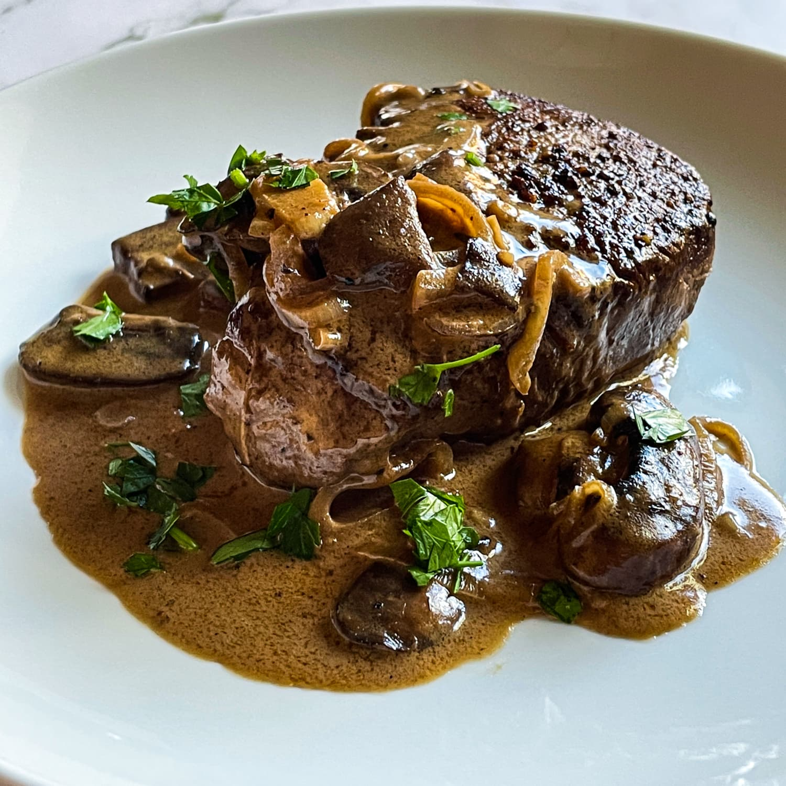

- 2, 8 ounce beef tenderloin steaks
- 1 Tablespoon, Extra Virgin Olive Oil
- 1/4 Teaspoon, Kosher Salt and Pepper
- 1 Tablespoon, grass fed butter
- 8 ounces, Cremini mushrooms, cleaned and sliced
- 2 cloves garlic, minced
- 1/2 small onion or 2 shallots, minced
- 1/4 of Cognac or Brandy
- 1 Tablespoon, Dijon Mustard
- 1 Tablespoon, Worcestershire Sauce
- 1/2 Cup, Beef Broth, preferably homemade
- 1/4 Cup, Heavy Whipping Cream
- 1/4 Cup, chopped chives or parsley, for garnish
- Pound the steaks out with a meat mallet or heavy pot so they are maximum 3/4 inch thick. Season both sides with kosher salt and pepper.
- In a hot saute pan, preferably cast iron or similar, which retains heat, pour in Extra Virgin Olive Oil, wait for oil to heat up, then sear steaks on both sides. Once seared, remove steaks from pan.
- In same pan, after letting it cool slightly, add butter, mushrooms, garlic, and onion, and saute until moisture is cooked off.
- Add Cognac or Brandy and flambe, if you feel up to it.
- Add Dijon Mustard, Worcestershire Sauce, and Beef Broth - Cook for a few minutes.
- Pour in Heavy Whipping Cream and add steaks to finish cooking - about 3 to 5 minutes.
- Serve on plates, add chopped herbs of choice for the garnish